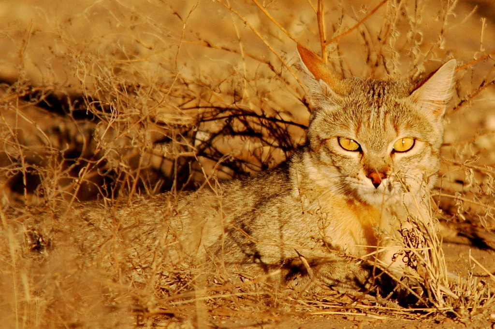
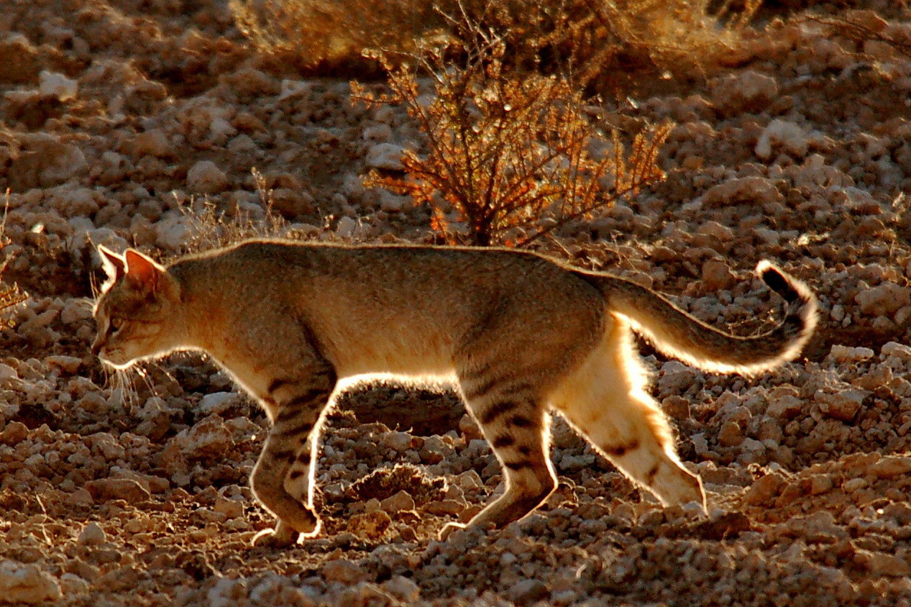
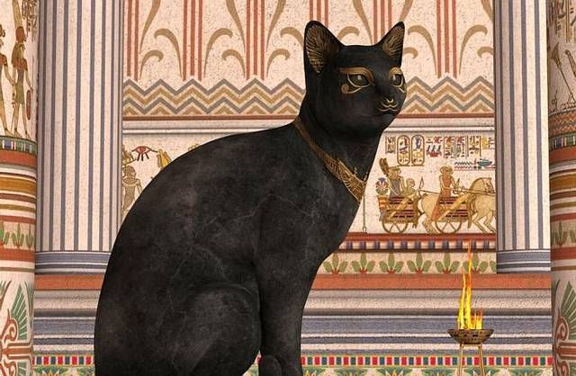

La historia de la especie de los gatos
La familia de los felinos (Felidae) existe en la Tierra desde hace unos 10 a 15 millones de años. Todos los gatos actuales —desde los leones hasta los gatos domésticos— descienden de un ancestro común que vivió en Asia. Con el tiempo, se extendieron por todo el mundo y se adaptaron a distintos hábitats: unos se convirtieron en caracales del desierto, otros en tigres de la selva, y otros en gatos que duermen sobre una almohada.
¿Quién es el antepasado del gato doméstico?
El antepasado directo de todos los gatos domésticos es el gato montés africano, Felis lybica. Todavía existe hoy y se parece mucho al típico gato rayado que se puede ver en cualquier parte. Hace unos 9-10 mil años, en la región del actual Medio Oriente, estos gatos empezaron a acercarse a los humanos. No fue por cariño, sino por comida. Las personas comenzaron a cultivar granos, lo que atrajo a los ratones. Y los gatos, a su vez, comenzaron a cazar cerca de los asentamientos. A los humanos les pareció útil tenerlos cerca, y con el tiempo comenzó la convivencia.

Egipto: el culto a los gatos
En el Antiguo Egipto, los gatos llegaron a ser considerados sagrados. Se los asociaba con la diosa Bastet, y algunos incluso eran momificados. Matar a un gato podía ser castigado severamente. En Egipto se empezaron a tener gatos no solo por utilidad, sino también como compañía.

Cómo llegaron a todo el mundo
Los marineros llevaban gatos en los barcos para controlar a las ratas. Así llegaron a Europa, Asia y más tarde a América y Australia. Siempre estuvieron cerca de los humanos, pero sin perder su independencia. A diferencia de los perros, no fueron domesticados para obedecer, por eso conservaron su instinto de caza y su carácter libre.
El gato doméstico hoy
A pesar de vivir miles de años junto a las personas, genéticamente el gato doméstico sigue siendo muy parecido a su antepasado salvaje. Su comportamiento también se parece: cazar, esconderse, observar, dormir solo. La diferencia es que ahora lo hace en el sofá.
Actualmente existen más de 70 razas de gatos, pero la mayoría de los gatos del mundo no tienen raza: son comunes, únicos y viven en casas, calles, pueblos y ciudades. Y siguen siendo uno de los animales más queridos del planeta.
La historia de los gatos domésticos